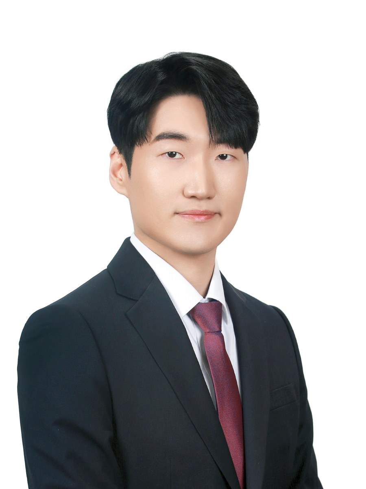

Schematic / figure
Quantum Photonics
On-chip squeezed-light sources: intensity-difference squeezing from SFWM in SiN, with cryogenic (4 K) operation.
squeezed lightSFWM4 K

M.S. Student, KAIST
Quantum Semiconductor Photonic INtegration Lab (Q-SPIN) · Advisor: Prof. Donguk Nam
I received my B.S. from Seoul National University and am currently pursuing my M.S. at KAIST. I work on integrated photonics for scalable quantum computing.
I am currently seeking Ph.D. opportunities starting in Fall [2027].
daeyeon@kaist.ac.krNews
Research
Integrated photonics for scalable quantum computing.
On-chip squeezed-light sources: intensity-difference squeezing from SFWM in SiN, with cryogenic (4 K) operation.
SiN photonic circuits from design to tape-out — microrings and couplers — and integration of 2D materials with photonic devices.
Four-wave mixing, frequency combs and Raman lasing in high-Q integrated resonators.
Projects
KAIST · 2025 – present · Two tape-outs · [Foundry / MPW run]
Designed microring resonators, directional couplers, edge couplers and grating couplers. [One key measured result.]
KAIST · in collaboration with Delta Electronics, Inc.
Modeled and simulated an LN-based optical phased array for chip-scale LiDAR. [Steering range / key number.]
Publications
† equal contribution · * corresponding author · Full list on Google Scholar
Background
Skills
Awards & Media
Nov 2022 · Press: The Korea Economic Daily (1), (2)
[One sentence on the idea and what you built — framed for a US reader who doesn't know the competition.]